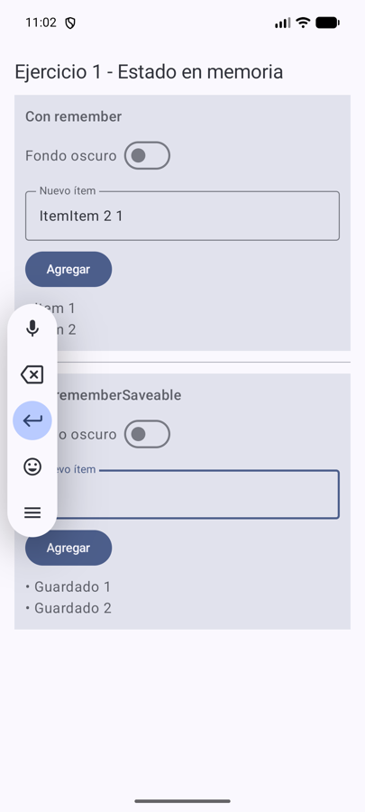
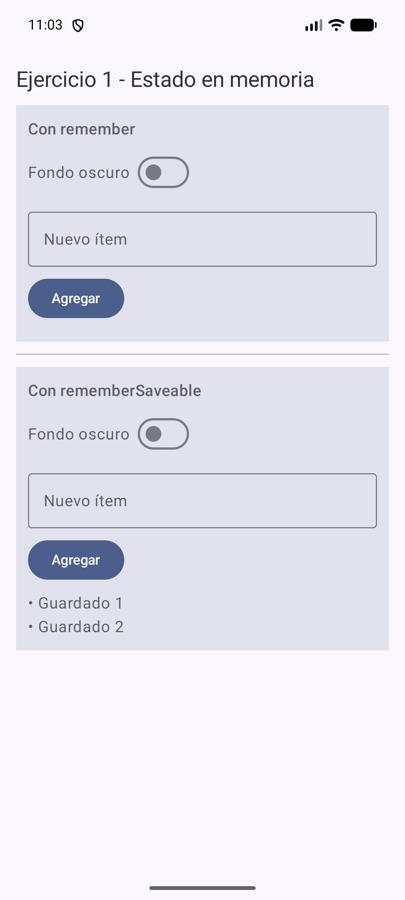

Desarrollo de Aplicaciones I · UADE · Guía de Ejercicios: Persistencia local con Room (v1.0)
Repositorio: EJERCICIOS-KOTLIN-ROOM · una rama por ejercicio (ej01-… a ej15-…) · Felipe Forte ·
Kotlin + Jetpack Compose + Room 2.8.5 (KSP)
Cómo leer estos apuntes. La Parte 1 resume la teoría (presentación Persistencia en Android: SQLite, Room y
Kotlin) y los temas más importantes. La Parte 2 recorre los ejercicios uno por uno: “En pocas palabras”, “Importante a
considerar”, el código real, las pruebas en el emulador (con capturas y consultas SQL al archivo real de la base, copiado del
emulador y abierto con sqlite3), las preguntas de la guía y el criterio de finalización. Al final hay anexos y el
glosario.
main.Persistir es conservar información más allá de la vida de una pantalla o del proceso de la app. Hay cuatro niveles que no hay que confundir:
| Nivel | Ejemplo | Hasta cuándo dura |
|---|---|---|
| Estado efímero | variables en memoria, remember | hasta que termina el proceso (o antes, al rotar) |
| Estado de interfaz | rememberSaveable, SavedStateHandle | sobrevive a recrear la pantalla; valores chicos |
| Persistencia local | archivos, DataStore, SQLite / Room | sobrevive a cerrar la app y reiniciar el teléfono |
| Backend remoto | API + base en un servidor | compartido entre dispositivos; necesita red y sincronización |
SQLite es una base de datos relacional embebida: guarda todo en un archivo dentro de la app (por ejemplo
notas.db). Tiene tablas, filas, columnas, claves primarias y foráneas, índices, restricciones y transacciones.
CREATE TABLE notas (id INTEGER PRIMARY KEY AUTOINCREMENT, titulo TEXT NOT NULL, creadaEn INTEGER NOT NULL); SELECT * FROM notas WHERE importante = 1 ORDER BY creadaEn DESC; UPDATE notas SET titulo = ? WHERE id = ?; -- siempre con parámetros, nunca concatenando texto
SQLite no tiene Boolean (usa 0/1) ni fechas (se guarda un Long en milisegundos).
Room es una biblioteca de Jetpack que se pone encima de SQLite: uno escribe clases Kotlin con anotaciones y KSP genera, al compilar, el código que habla con SQLite. Si una consulta está mal escrita, no compila.
| Pieza | Qué es | Ejemplo del proyecto |
|---|---|---|
@Entity | una data class = una tabla; cada propiedad, una columna | NotaEntity, CategoriaEntity |
@Dao | interfaz con las operaciones: @Insert, @Update, @Delete, @Query | NotaDao |
@Database | clase abstracta que lista las tablas, la versión y da acceso a los DAO | AppDatabase |
@TypeConverter | convierte tipos que SQLite no conoce (enum, fechas) | Prioridad ⇄ texto |
Migration | pasa una base instalada de una versión a otra sin perder datos | MIGRATION_1_2 |
UI / Compose ──eventos──▶ ViewModel ──▶ Repository ──▶ DAO ──▶ RoomDatabase ──▶ SQLite (archivo .db) UI / Compose ◀──estado── ViewModel ◀── Flow ◀────────── (Room re-emite cuando cambia la tabla)
suspend: pueden tardar, se llaman desde una corrutina y no congelan la pantalla.Flow<List<...>>: Room vuelve a emitir cada vez que cambia la tabla, y la pantalla
se actualiza sola (sin “recargar”).WHERE, ORDER BY, COUNT), no trayendo toda la tabla a memoria.@PrimaryKey(autoGenerate = true)): identifica la fila aunque cambie el título.unique, impiden repetidos (cuestan espacio y escrituras).@Insert(onConflict = ...): ABORT (falla), IGNORE, REPLACE (borra y reinserta).ForeignKey: qué pasa al borrar el padre es una decisión del dominio
(CASCADE, SET_NULL, RESTRICT). Para leer padre + hijos: @Embedded + @Relation con @Transaction.@Transaction / withTransaction): varias operaciones que se hacen todas o ninguna.La app instalada conserva la base del usuario mientras el código cambia. Si cambia una Entity, cambia el esquema: hay que subir
version en @Database y dar una migración (ALTER TABLE ... ADD COLUMN ... DEFAULT ...). Con
exportSchema = true Room guarda el JSON de cada versión para revisar cambios y probar migraciones con MigrationTestHelper.
fallbackToDestructiveMigration borra los datos: la guía pide no usarlo.
Room.inMemoryDatabaseBuilder), de restricciones y de migraciones (instrumentados, en emulador).suspend para escribir, Flow para observar.Cada ejercicio vive en su propia rama y contiene solo su código. La app de notas evoluciona del Ej 4 al 14 (cada rama parte de la anterior, como pide la guía); el Ej 15 es una app aparte de préstamos.
Consigna: Lista editable en Compose sin Room. Agregar ítems y probar: rotar, volver atrás, cerrar desde recientes y matar el proceso. Registrar qué sobrevive. Tabla “dato / dónde vive / dónde debería vivir”.
Rama: ej01-estado-en-memoria
remember y otra con rememberSaveable, para comparar qué sobrevive a cada situación.remember no guarda nada en disco: solo evita que el valor se pierda cuando Compose redibuja. Al rotar, se pierde.rememberSaveable sobrevive a la rotación (Android lo guarda en un “paquetito” de estado), pero no a que el usuario cierre la app.

| Caso | remember | rememberSaveable |
|---|---|---|
| 1) Rotar | ❌ se pierde (probado) | ✅ sobrevive (probado) |
| 2) Volver atrás y entrar | ❌ | ❌ la Activity se destruye del todo |
| 3) Cerrar desde recientes | ❌ | ❌ |
| 4) Matar el proceso desde Android Studio | ❌ | ❌ |
| Dato | Dónde vive ahora | Dónde debería vivir |
|---|---|---|
| Texto del TextField (borrador) | remember | rememberSaveable (es efímero) |
| Lista de elementos | remember / rememberSaveable | Room: es información del usuario |
| Preferencia visual (fondo oscuro) | remember | DataStore (preferencia chica, no una tabla) |
1. ¿remember implica persistencia?
No. Solo conserva el valor mientras la composición vive; si la Activity se destruye, se pierde.
2. ¿Diferencia entre conservar estado ante recomposición y conservar datos al reiniciar el proceso?
Recomponer es Compose volviendo a ejecutar la función con el proceso vivo: alcanza remember. Reiniciar el proceso borra toda la memoria: solo sobrevive lo que está en disco (archivo, DataStore, Room).
3. ¿Todos los datos de una pantalla deberían guardarse en una base?
No. Lo que importa al usuario y debe durar (notas) va a la base; lo del momento (borrador, diálogo abierto, scroll) es estado de UI.
4. ¿Qué dato sería absurdo persistir?
El “estoy escribiendo” del TextField a medio tipear o un flag de diálogo abierto: no sirven al día siguiente y ensucian la base.
El código se organiza por capas, como en el proyecto de MVVM (y el repositorio de referencia PokedexAcademy-MVVM-Clean). En cada rama aparecen solo las carpetas de ese ejercicio.
app/src/main/java/com/example/ejercicioskotlinroom/ ├── MainActivity.kt # punto de entrada ├── NotasApp.kt # Application: crea la ÚNICA instancia de la base (desde el Ej 4) ├── core/theme/ # tema de Compose ├── data/ │ ├── local/ # AppDatabase, Converters, Migrations │ │ ├── entity/ # tablas (@Entity) y resultados de relaciones │ │ └── dao/ # operaciones (@Dao) │ └── repository/ # Repository: la API de datos que ve el ViewModel (desde el Ej 9) ├── domain/model/ # enums del dominio (Prioridad, EstadoPrestamo) └── presentation/ # una carpeta por pantalla (pantalla + ViewModel) app/src/androidTest/java/com/example/ejercicioskotlinroom/ └── data/local/ # tests de DAO, converters y migraciones (corren en el emulador) app/schemas/ # JSON del esquema de cada versión (exportSchema = true)
Entity (NotaEntity):
no hay un modelo de dominio aparte ni casos de uso. Por eso domain/ solo tiene los enums. Los tests de Room van en
androidTest (necesitan Android para abrir SQLite) y se corren con ./gradlew :app:connectedDebugAndroidTest.
git clone https://github.com/feliforte14/EJERCICIOS-KOTLIN-ROOM.git cd EJERCICIOS-KOTLIN-ROOM git checkout ej14-migraciones # o la rama del ejercicio
adb exec-out run-as com.example.ejercicioskotlinroom cat databases/notas.db > notas.db sqlite3 notas.db "SELECT * FROM notas;" (copiar también notas.db-wal si existe)
./gradlew :app:connectedDebugAndroidTest.| Rama | Tests | Rama | Tests |
|---|---|---|---|
| ej08 | 4 ✅ | ej12 | 14 ✅ |
| ej09 | 4 ✅ | ej13 | 17 ✅ |
| ej10 | 8 ✅ | ej14 | 19 ✅ (incluye migración) |
| ej11 | 12 ✅ | ej15 | 5 ✅ |
| Pregunta | Respuesta |
|---|---|
| 1. ¿Qué dato existe solo en memoria y qué dato está realmente persistido? | El texto que se está escribiendo vive en el estado de la pantalla; las notas guardadas están en notas.db (Ej 1 vs Ej 4–5). |
| 2. ¿Qué clase define una fila y cuál define operaciones sobre la tabla? | La @Entity (NotaEntity) define la fila; el @Dao (NotaDao) las operaciones (Ej 2–3). |
| 3. ¿Esta consulta se ejecuta una vez o queda observada? | Si devuelve Flow queda observada y re-emite al cambiar la tabla; si es suspend se ejecuta una vez (Ej 6). |
| 4. ¿Qué hilo o corrutina está ejecutando una escritura? | Una corrutina del viewModelScope llama a funciones suspend; Room las ejecuta fuera del hilo principal (Ej 5, 9). |
| 5. ¿La UI conoce directamente el DAO? | Hasta el Ej 8 sí; desde el Ej 9 la pantalla solo habla con el ViewModel, que usa el Repository. |
| 6. ¿Qué pasa si la tabla está vacía? | La consulta devuelve una lista vacía y la pantalla muestra su estado vacío (Ej 6). |
| 7. ¿Qué pasa si el usuario intenta guardar dos veces? | Sin restricciones se duplica; con un índice único y ABORT el segundo falla y se informa (Ej 10). |
| 8. ¿Qué columna identifica de forma estable a una fila? | La clave primaria id, autogenerada: editar el título no cambia la identidad (Ej 7). |
| 9. ¿Hay una regla de integridad que solo está en la UI y no en la base? | Por ejemplo, “título no vacío” se valida en la app antes de insertar (Ej 5); la unicidad y las relaciones, en cambio, están en la base (índice único, ForeignKey). |
| 10. ¿Este cambio de modelo modifica el esquema instalado? | Sí si cambia una Entity (columna nueva, renombrar). Exige subir la versión y migrar (Ej 14). |
| 11. ¿Hay camino de migración desde la versión anterior? | Sí: MIGRATION_1_2 agrega archivada; se probó instalando la rama 14 encima de la 13 (Ej 14). |
| 12. ¿Se comprobó el dato en Database Inspector o solo se asumió que estaba guardado? | En estos apuntes cada prueba consulta el archivo real de la base con sqlite3. |
Cuando aparece un problema con Room, la guía propone anotar cinco datos antes de probar cambios al azar:
| Qué estaba haciendo | Mensaje exacto | Qué cambió justo antes | Hipótesis | Cómo se verificó |
|---|---|---|---|---|
Ejemplo típico del Ej 14: agregar la columna archivada | Room cannot verify the data integrity… you forgot to update the version number | Se modificó NotaEntity | Cambió el esquema sin subir la versión | version = 2 + MIGRATION_1_2; test de migración y prueba instalando encima de la rama 13 |
Prompts que conviene evitar (sección 20): “Haceme toda la app con Room y MVVM”, “Arreglá mi base de datos”. Mejor: pegar el mensaje exacto y pedir una hipótesis y una forma de verificarla.
| Error | Enfoque preferible |
|---|---|
| Consultas bloqueantes en el hilo principal | DAO con suspend / Flow |
| Concatenar texto del usuario en SQL | Parámetros en @Query (:titulo) |
| Modificar entidades sin aumentar la versión | Planificar y probar migraciones |
| Consultar toda la tabla para una pantalla | Filtrar, proyectar y paginar en SQL |
| Crear una base por pantalla | Una instancia compartida (en el Application) |
fallbackToDestructiveMigration sin pensar | Preservar datos con migraciones verificadas |
| Confundir Room con sincronización en la nube | Diseñar explícitamente la fuente remota y los conflictos |
| Término | Qué significa, en simple |
|---|---|
| Persistir | Guardar un dato de forma que sobreviva a cerrar la app, matar el proceso o reiniciar el teléfono. |
| SQLite | El motor de base de datos que viene en Android. Guarda todo en un archivo dentro de la app (por ejemplo notas.db). |
| Tabla / fila / columna | Una tabla es como una planilla: cada fila es un registro (una nota) y cada columna un dato (título, fecha). |
| SQL | El idioma para hablarle a la base: SELECT (leer), INSERT (agregar), UPDATE (modificar), DELETE (borrar). |
| Room | Biblioteca de Android que se pone encima de SQLite: uno escribe clases de Kotlin con anotaciones y Room genera el código que habla con SQLite. |
| Entity | Una data class con @Entity: describe una tabla. Cada objeto = una fila. |
| DAO | Interface con @Dao: lista las operaciones sobre la tabla (insertar, buscar, borrar). Room escribe la implementación. |
| RoomDatabase | La clase que representa la base entera: qué tablas tiene, qué versión es, y da acceso a los DAO. |
| Clave primaria (PK) | La columna que identifica cada fila sin repetirse (acá, id). |
| Clave foránea (FK) | Una columna que apunta a la PK de otra tabla (una nota “pertenece” a una categoría). |
| Índice | Estructura extra que acelera buscar u ordenar por una columna, y puede impedir repetidos (índice único). |
| Esquema | La “forma” de la base: qué tablas y columnas tiene. Si cambia, hay que migrar. |
| Migración | Instrucciones para pasar una base instalada de una versión del esquema a la siguiente sin perder datos. |
| Transacción | Grupo de operaciones que se hacen todas o ninguna. |
| KSP | Herramienta que, al compilar, lee las anotaciones de Room y genera el código. Si el SQL está mal, no compila. |
| suspend / corrutina | Las operaciones de base pueden tardar: se marcan suspend y se llaman desde una corrutina, sin congelar la pantalla. |
| Flow | Un “canal” de valores. Un DAO que devuelve Flow vuelve a emitir la lista cada vez que la tabla cambia. |
| Database Inspector | Herramienta de Android Studio (App Inspection) para ver y editar la base de la app mientras corre en debug. |